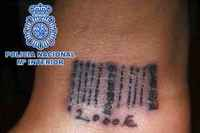

Efe @ 24-03-2012 10:16
Madrid.- Se ha liberado a una joven secuestrada por haber intentado escapar y a la que golpearon y rasuraron el pelo y las cejas.
La Policía Nacional ha desarticulado dos clanes de nacionalidad rumana que explotaban sexualmente a mujeres, a las que tatuaban códigos de barras si intentaban fugarse, y ha detenido a 22 personas, entre ellos los dos cabecillas.
En la operación, la Policía ha liberado a una de sus víctimas, una joven rumana de 19 años, que permanecía secuestrada por haber intentado escapar y que, además de sufrir golpes y latigazos, fue marcada con un código de barras en el que constaba su deuda con la red y le rasuraron el pelo y las cejas.
Las redes, que obligaban a las mujeres a ejercer la prostitución en el polígono Marconi, en la calle Montera y en diversos clubes de alterne de la región, alquilaban pisos, denominados "tonas", donde se realizaban los servicios y que eran vigilados por algunos de sus miembros para retirar inmediatamente el dinero recaudado a las mujeres.
"Maletas", "bultos" o "bicicletas" eran algunos de los términos utilizados por los proxenetas para referirse a las mujeres que tenían bajo su control, informa la Policía Nacional en una nota.
Este grupo captaba, transportaba y explotaba coactivamente a otras mujeres, algunas de ellas menores de edad, en la calle Montera de la capital y en diversos clubes de la comunidad madrileña.
Con la colaboración de la Policía Municipal de Madrid, se pudo comprobar que los proxenetas se repartían la zona de la calle Montera por sectores donde distribuían a las mujeres y prohibían a otras que ejercieran la prostitución en ese lugar, por el que los proxenetas pagaban un canon en concepto de "alquiler".
Esta red de proxenetas estaba dirigida por Iancu T., quien tenía en vigor una orden de busca y captura emitida por Rumanía por delitos de esta misma naturaleza.
Este hombre contaba con la colaboración de otros hombres y algunas mujeres de confianza que, además de ejercer la prostitución, controlaban al resto.
Algunos miembros de la red se dedicaban a otras actividades delictivas como el tráfico de sustancias estupefacientes, hurtos al descuido a los viandantes o a clientes, robos con fuerza o receptación.
Las investigaciones realizadas permitieron la desarticulación de otro clan, también de nacionalidad rumana y liderado por Iulan T., con antecedentes en España por falsificación de documentos, y sobrino del cabecilla de la otra organización.
Este último es quien mantenía secuestrada a la joven de 19 años que intentó escapar y su tío, según la Policía, le había aconsejado que la atara con cadenas a un radiador y que no le diera de comer.
Tras tener conocimiento de la situación, los agentes pusieron inmediatamente en marcha un dispositivo policial para rescatar a la mujer y proceder a la detención de todos los miembros de la organización.
La mujer, que estaba retenida en un piso de Valdemoro, presentaba múltiples lesiones de diversa consideración, fruto de los golpes y latigazos a los que había sido sometida, así como un código de barras tatuado en su muñeca con la deuda contraída con el clan.
Ocho personas fueron detenidas en el momento de la liberación y, tras realizar registros en otros cuatro domicilios de los dos clanes en Madrid capital y en Getafe, se arrestaron a otras catorce personas.
En los registros los agentes intervinieron tres armas de fuego, sables y machetes, unos 140.000 euros, más de la mitad oculto en un doble techo de la casa de uno de los cabecillas, gran cantidad de joyas, cinco vehículos y material electrónico de última generación.